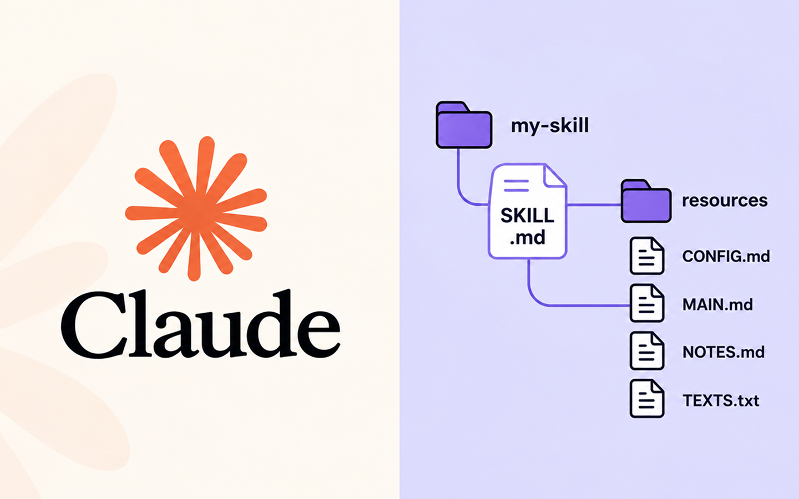
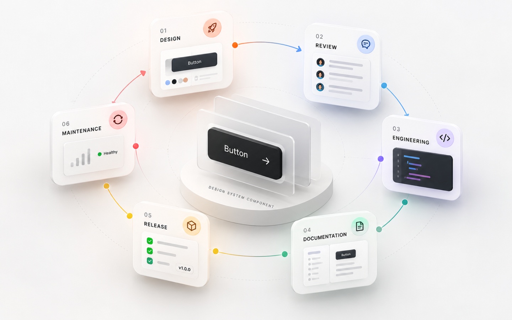
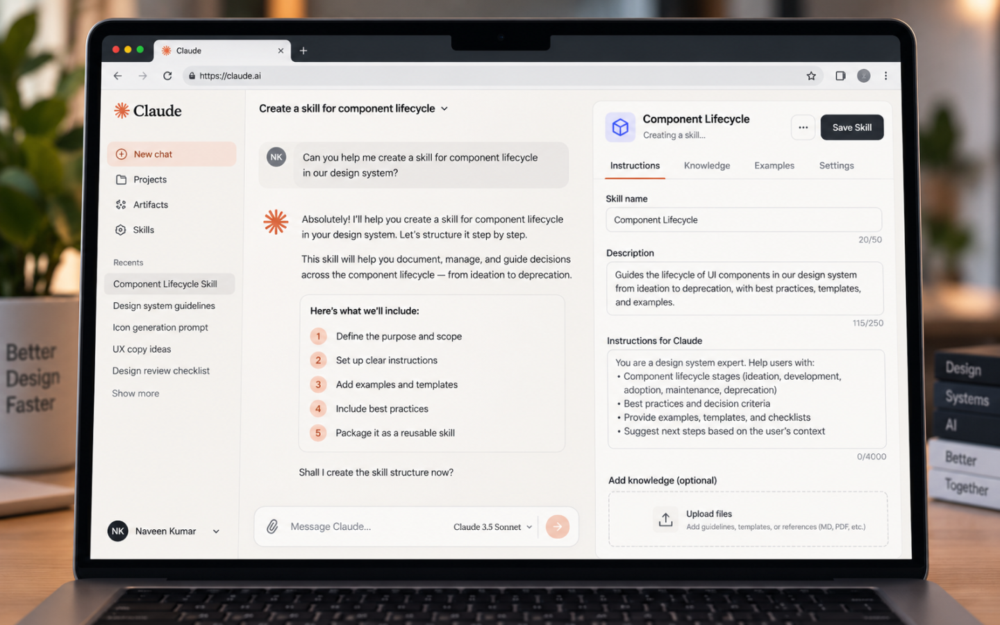
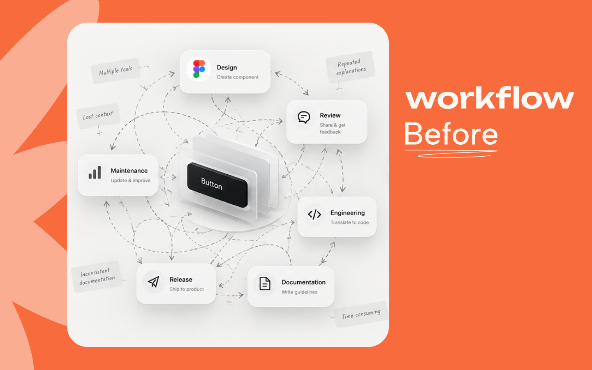
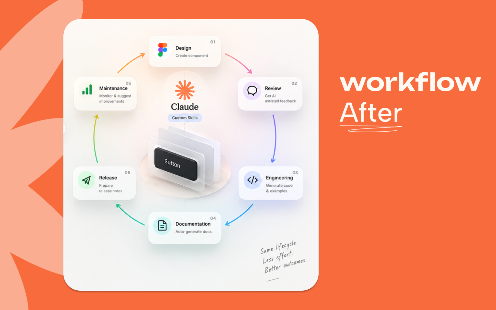

Stages in the component lifecycle
Design systems · Collaboration · AI-assisted workflow
Design × Engineering
Collaboration.
Overview
I worked on improving how Design and Engineering collaborate around shared UI components. The goal was not just to document components, but to create a more reliable system for how components are created, reviewed, handed over, updated, and maintained over time.
The work sits at the intersection of product design, design systems, documentation, and engineering collaboration, with AI becoming part of how I made repeatable system work more efficient.
Clear Dev SPOC model
Product areas supported by reusable prototyping

01 / The challenge
The handoff was only one part of the problem.
As the design system evolved, component work became harder to manage consistently. Designers could define a component in design, while engineers maintained the implementation separately. Without a clear lifecycle, small changes could create uncertainty around ownership, documentation, implementation, and communication.
- Component updates were not always consistent across Design and Engineering.
- Documentation required repeated manual effort and was difficult to keep current.
- Handoffs depended too much on individual communication and context.
- It was not always clear who should drive or validate a component change.
👉🏼The opportunity was to make the workflow clearer, repeatable, and easier to scale.
02 / The workflow
A component is not a deliverable. It is a lifecycle.
I treated a shared component as something that moves through a lifecycle rather than as a one-time design or development task.
01 / Design
Define
Define the component, states, behaviours, usage, and relevant design-system guidance.
02 / Review
Align
Align Design and Engineering before implementation so technical and design considerations are addressed early.
03 / Build
Implement
Engineering implements the component against the agreed design and behaviour.
04 / Document
Capture
Capture the information needed for designers and developers to understand and reuse the component.
05 / Release
Share
Make the updated component available with the necessary communication and context.
06 / Maintain
Evolve
Treat components as evolving product assets rather than one-time deliverables.

03 / My approach
From documentation to a system for healthy components.
Rather than treating the problem as a documentation exercise, I mapped the key stages from design → review → engineering → documentation → release → maintenance and identified where ownership or communication could break down.
This shifted the conversation from “How do we document this component?” to “How do we make sure this component stays healthy throughout its lifecycle?”
Both disciplines can see where a component is in its lifecycle and what needs to happen next.
Design intent and implementation context are aligned before work reaches production.
A component remains useful after release through maintenance, updates, and communication.
04 / Ownership
Clear ownership without adding another process layer.
One of the important changes was introducing clearer ownership around component updates through a Dev SPOC (Single Point of Contact) model.
This gave engineering-side questions, implementation decisions, and updates a clearer owner. It also made it easier for designers to know where to go when a component needed to change.
The model was designed to support collaboration rather than create another layer of process. Design remained responsible for design intent and experience, while Engineering provided implementation ownership and technical context.

05 / Documentation
Documentation should live inside the workflow.
I created a lightweight workflow using Confluence to make component documentation easier to maintain. The focus was on capturing useful information at the right point in the lifecycle instead of treating documentation as a separate task at the end.
Why the component exists and what experience it is meant to support.
States, interactions, usage and important edge cases.
Engineering context needed to build and reuse the component.
Who to talk to when the component needs to change.
↗Someone encountering a component later should be able to understand what it is, how it should be used, and who to talk to.
06 / AI workflow
AI became part of how I made the system repeatable.
A key part of this project was exploring how I could use Claude more intentionally as a design and systems tool, rather than simply using it as a chatbot.
I designed my workflow around Claude to turn repeatable design-system tasks into structured, reusable interactions. The goal was to make AI useful inside the actual workflow, with clear inputs, expected outputs, and constraints.
Building reusable Claude Skills
Instead of repeatedly explaining the same context and process to Claude, I structured that knowledge into reusable Claude Skills. These Skills define how Claude should approach a specific type of task, what information it should consider, and what kind of output it should produce.
I cannot show the exact Skill here, but I can explain how it works: it packages repeatable design-system knowledge and working methods into a reusable workflow.
→Prompt → one-off answer becomes Skill → repeatable workflow → consistent output

07 / How I used Claude
Designed by me. Accelerated by AI.
I used Claude to support areas such as:
- Structuring and drafting component documentation.
- Transforming existing design-system information into reusable formats.
- Checking consistency across component information.
- Reducing repetitive documentation work.
- Exploring and refining repeatable design-system workflows.
The important distinction is that I designed the workflow and Skills, while Claude handled the repetitive execution. Design judgement, system decisions, and validation remained with me.
Decide what information the model needs to produce useful work.
Define what should be standardized and what should remain open to judgement.
Keep design decisions, validation, and quality control with the designer.
08 / Why this matters
AI is more useful when it is part of the workflow.
This experience changed how I think about AI in product design. I am not just comfortable using AI tools. I am interested in understanding how to structure them around real workflows.
- What context should the model have?
- What should be standardized versus left open?
- How can a repeated task become a reusable Skill?
- How do I create constraints that improve output quality?
- Where should human judgement remain in the loop?

09 / What changed
A more predictable Design × Engineering workflow.
The result was a more predictable workflow around shared components. The work connected ownership, lifecycle, documentation, collaboration, and AI-assisted system tasks into a clearer operating model.
Clearer ownership for component changes and engineering questions.
More consistent communication between Design and Engineering.
A defined path for components beyond initial implementation.
Less repetitive work through AI-assisted documentation and system tasks.

10 / What I learned
Design systems are as much about the system around the component as the component itself.
This project reinforced an important lesson: the quality of a component is influenced as much by the system around it as by the component itself.
Good collaboration does not necessarily require more meetings or more process. It requires clear ownership, shared language, and a workflow that makes the right behaviour easy.
For me, this was an opportunity to operate beyond individual UI decisions and think about how Design and Engineering can work together at a systems level.